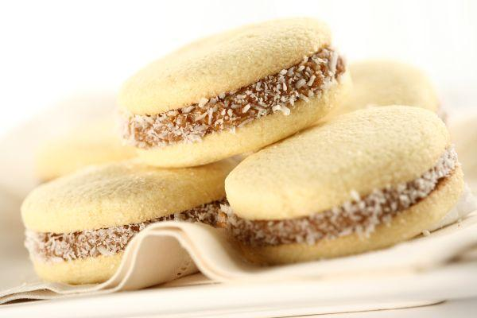

-Huevos 3
-Azúcar 150 gramos
-Sal una pizca
-Manteca margarina 300 gramos
-Harina 250 gramos
-Maizena 375 gramos
-Dulce de leche a gusto
Utensilios:Bowl, algo para batir
*Primer paso: Batimos el huevo con azúcar hasta que haga espuma, agregamos la pizca de sal y la manteca pomada, y batir hasta que quede una crema.
*Segundo paso:Luego agregamos la harina y maizena, unir todo hasta formar la masa, no hay que amasar.
*Tercer paso: Mandar al horno caliente más, o menos 10 minutos, luego los retiramos y rellenamos con el dulce de leche.
